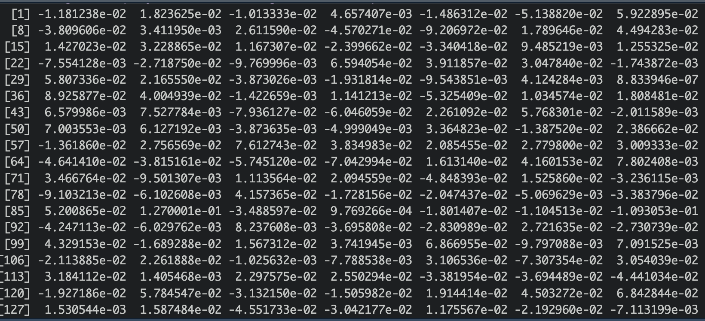
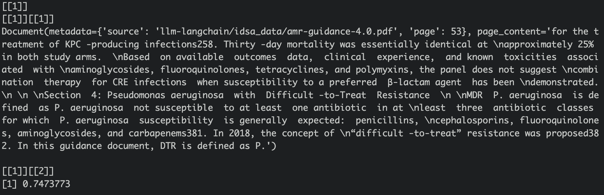
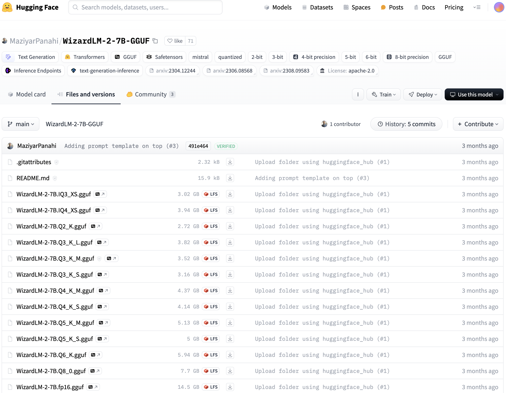
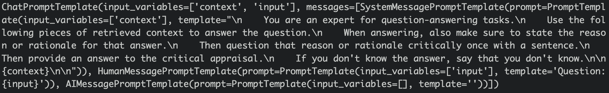
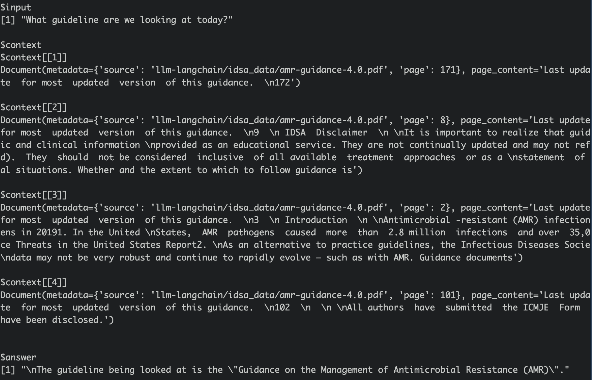
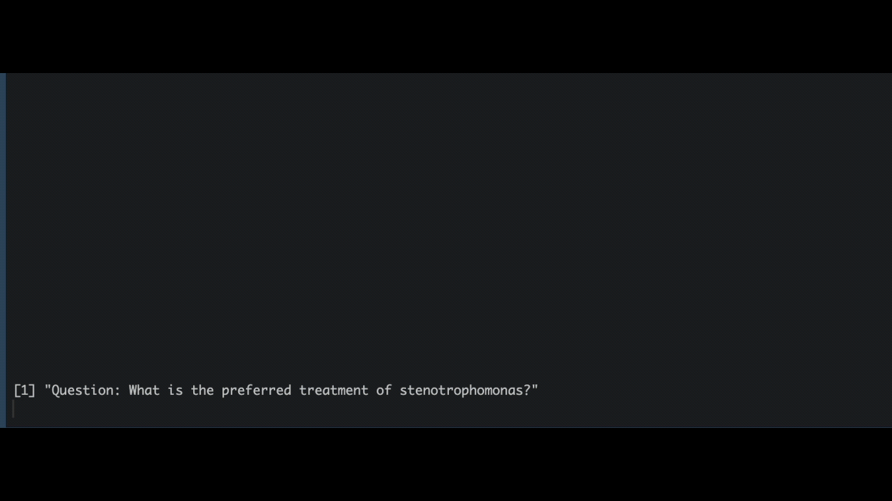

TL;DR
I think everyone should learn the intuition of LLM, prompt engineering, RAG, agents, etc. The concept itself and with some trial and error will provide users a renewed perspective of how these things work, how helpful and beneficial it can be for us, how it serves as a tool for learning and not a replacement. The simplest & most straightforward way of learning is using GPT4All GUI LangChain’s tutorial, use a Local LLM, and then give it a go! Yes most of these are in python but it shouldn’t prevent R user like me to use it in R via reticulate!
Disclaimer
This is mainly for data science educationa purpose only. This is NOT a medical advice, nor is it a medical education. Some medical statements here may be inaccurate. If you find any error in this article, please feel free to educate me.
Motivation
I have been wanting to learn LLM for a while now. My first attempt was an utter failure. Not being proficient in python, needing to install a bunch of python packages, different error lingo, were quite discouraging. That said, it’s always good to try something and fail, and then pick it up again some other time and invest more time chunks into learning the individual portions of it. This is exactly what happened! I’m glad that it did and now I have a better understanding of it.
What really catalyzed this learning process was the recent AI Summit Conference. They provided a Prompt Enigeering beginner session and that really helped me to want to learn more about LLM. However, most LLM sessions, books, all involve paid version of API such as OpenAI GPT3.5/4o, Claude, Azure, etc, I wanted something local and does not involve paying for each token, in my case erroneous token 🤣, sent to the API and get charged for my mistakes. Then, we stumbled upon GPT4All. This was really something that kicked start the process of learning without requiring ANY codes! Just download it, and it has a GUI, attach local files, and then chat away, without internet!
Below is a GIF of the website and a snapshot of the GUI

We won’t be going through the details of using GPT4All here, it is quite intuitive. They also have a discord channel if you have questions. Very nice and helpful people. I recently learnt that GPT4All does not have embedding implemented yet on the python SDK through the channel. The most straightforward way to learn how to run LLM locally is this in 3 simple ways:
- Download the app
- Open the app, select model to download
- Attach folder on LocalDoc (this can be tricky if document is too large/long, but if you use nomic.ai’s embedding, which requires sign up and API key, it’s very fast).
- Then start chat, attach the LocalDoc folder of interest, and start chatting!
You will also need to change setting of n_ctx (tokens that can be sent) and max_tokens (tokens that LLM returns response) if your question is long or want longer answer. I did not tweak other things in here much, I didn’t find the response was much accurate, though it’s quick. Since it doesn’t allow a whole lots of customization, I went to LangChain instead since mainstream uses this a lot and I can find more tutorial in that setting. However, this really got me started and am forever grateful I found this and its community. Another thing that the community pointed out was that if the prompt template has something like
### Human:
%1
### Assistant:
That’s not the right template, more so a placeholder and you’d have to enter the model specific prompt template for it to work, such as for Llama 3 system prompt template.
<|im_start|>system
Write your system prompt here<|im_end|>
With LangChain, you don’t need the above, most of them are done for you! More to come.
🦜⛓️💥LangChain
The reasons I chose LangChain to learn were because of standardization of the lingo, functions, workflow etc. It reminds me a whole lot of TidyModels. It has a specific workflow, but incorporates all the cool engines (ML methods) into the workflow. It doesn’t matter whether you’re using Llama 3, WizardLM, Gemma2 etc, the workflow, functions are all the same. Also, there are lot of resources out there that uses this and that is extremely helpful for me to start. Not to mention, the documentation of LangChain is fantastic! Because this field is evolving so swiftly some of the tutorial codes are deprecated but the documentations offer the current function and points you to the right direction. Definitely enjoyed reading through it when I stumbled upoen problem. ❤️
That said, it does not come without LOTS and LOTS of trial and error. Below I’ll try to document the things I need for this to run on R. It may not be extensive, but if you are stuck in any of the steps below please let me know, I’ll try to see if I can reproduce it and help you troubleshoot if I can. Here, I am using LlamaCpp because it is an efficient, open-source C++ implementation of Meta’s LLaMA language model, designed for CPU-based inference. It allows users to run large language models on consumer-grade hardware with relatively low memory requirements, thanks to its support for various quantization levels
Prerequisite
I assume you have python and reticulate installed, and your reticulate is pointing towards the python you use to install the following packages in python
pip install --upgrade langchain langchain-community langchain_core langchain_huggingface llama-cpp-python faiss-cpu
Sorry if I missed anything. If when you run the code you noticed some error where packages not found, you can use that to troubleshoot. Let me know if I missed anything, I’ll modify.
Code In Action - Explained
Load Packages
library(reticulate)
library(tidyverse)
# load modules
langchain_community <- import("langchain_community")
langchain <- import("langchain")
langchain_core <- import("langchain_core")
langchain_huggingface <- import("langchain_huggingface")
# load functions
### Documents
DirectoryLoader <- langchain_community$document_loaders$directory$DirectoryLoader
PyPDFLoader <- langchain_community$document_loaders$PyPDFLoader
RecursiveCharacterTextSplitter <- langchain$text_splitter$RecursiveCharacterTextSplitter
HuggingFaceEmbeddings <- langchain_huggingface$HuggingFaceEmbeddings
### Embedding / Vectorstorage / Retriever
FAISS <- langchain_community$vectorstores$FAISS
### Model
LlamaCpp <- langchain_community$llms$LlamaCpp
CallbackManager <- langchain_core$callbacks$CallbackManager
StreamingStdOutCallbackHandler <- langchain_core$callbacks$StreamingStdOutCallbackHandler
### Template
PromptTemplate <- langchain$prompts$PromptTemplate
ChatPromptTemplate <- langchain_core$prompts$ChatPromptTemplate
### Chain
create_retrieval_chain <- langchain$chains$create_retrieval_chain
create_stuff_documents_chain <- langchain$chains$combine_documents$create_stuff_documents_chain
This is quite self-explainatory. If you have questions, copy and paste on LLM and have it explain. Make sure to get your copy of pdf here
Load & Embed Document
loader = PyPDFLoader("amr-guidance-4.0.pdf")
documents = loader$load()
text_splitter = RecursiveCharacterTextSplitter(chunk_size=1000, chunk_overlap=200)
docs = text_splitter$split_documents(documents)
vectorstore = FAISS$from_documents(documents=docs, embedding=HuggingFaceEmbeddings())
retriever = vectorstore$as_retriever()
Explaination:
- Loads the contents of the PDF file named “amr-guidance-4.0.pdf”.
- Extracts the text content from the loaded PDF and stores it in the documents variable.
- Creates a text splitter that will divide the text into chunks of approximately 1000 characters each, with an overlap of 200 characters between adjacent chunks (to maintain context).
- Applies the splitter to the documents variable, breaking the text into smaller chunks stored in the docs variable.
- Initializes an embedding model from the Hugging Face library. Embeddings are numerical representations of text that capture semantic meaning.
- Creates a FAISS vector store (vectorstore). It takes the split text chunks (docs) and converts them into embeddings using the specified HuggingFaceEmbeddings model. These embeddings are then stored in the vector store.
- Creates a retriever object from the vectorstore. This retriever allows you to efficiently search the vector store for text chunks that are semantically similar to a given query.
Embedding, huh?
Embedding is a technique used in natural language processing (NLP) to represent words, sentences, or documents as numerical vectors. These vectors capture the semantic meaning of the text and can be used for various NLP tasks, such as similarity search, text classification, and language generation. In this case, we are using the Hugging Face library to generate embeddings for the text chunks extracted from the PDF document.
This tutorial has a great description of what embedding model -> vector storage means.
Example of embedding vector
embedding = HuggingFaceEmbeddings()
embedding$embed_query(text="can i use gentamicin for pseudomonas infection")

Then this embedding vector will be compared with all of the chunk vectors using squared L2 distance (Euclidean distance):
The actual euclidean distance we need to square-root it but here FAISS has omitted it for computational efficiency. The lower the number the more similar the 2 vectors are, it works the same regardless of square-rooting or not. More details on the proof
Return the Best (lowest squared L2) Similarity
vectorstore$similarity_search_with_score(query = "can i use gentamicin for pseudomonas infection", k=as.integer(1))

#### Now let’s calculate it by hand!
query_v <- embedding$embed_query(text="can i use gentamicin for pseudomonas infection")
page53_v <- embedding$embed_query(text=docs[[167]]$page_content)
sum((query_v - page53_v)^2)
## [1] 0.7473773
YES !!! Same number, awesome!!! ✅🙌👍
Model
llm = LlamaCpp(
model_path="wizardlm-13b-v1.2.Q5_K_M.gguf",
streaming=TRUE,
callback_manager=CallbackManager(handlers = list(StreamingStdOutCallbackHandler())),
n_ctx = as.integer(2048),
max_tokens = as.integer(1024),
temperature = 0,
verbose = F)
Explaination:
- Initializes a LlamaCpp object from the langchain.llms module
- select path of GGUF model (see below how to download)
- Enables streaming output, allowing the model to generate text incrementally and send it back as it’s produced, rather than waiting for the entire generation to finish.
- Creates a CallbackManager object, which allows you to register callbacks (functions) to be executed during the text generation process. StreamingStdOutCallbackHandler. This handler prints the generated tokens directly to the standard output (your console) as they are produced, providing a real-time view of the generation.
- Sets the maximum context window size to 2048 tokens. The context window is the amount of text the model can “remember” and use to generate its output.
- Limits the maximum number of tokens in the model’s output to 1024. This prevents the model from generating overly long responses.
- Controls the “creativity” or randomness of the model’s output. A temperature of 0 makes the model deterministic, always choosing the most likely next token.
- Disables verbose logging from the LlamaCpp library. I disabled this to make it more aesthetically nice for the blog, you should set this to TRUE to see detailed output during the generation process.
How to Download GGUF models?
- Go to Hugging Face, here I have pre-selected
text-generation model and GGUF library for you
- Select a model that piqued your interest
- Select “Files and versions”

- Select a model to download and download. If the gguf contains part 1 of 2, make sure to download both parts and select the first part when you’re assigning the model.
Please note that certain LLM such as Llama, Gemma etc, requires you to request permission to use their models. It is quite straightforward, read through their policy, request it by filling out information, wait for approval then you’re in!
Prompt
system_prompt = "
You are an expert for question-answering tasks.
Use the following pieces of retrieved context to answer the question.
When answering, also make sure to state the reason or rationale for that answer.
Then question that reason or rationale critically once with a sentence.
Then provide an answer to the critical appraisal.
If you don't know the answer, say that you don't know.
{context}
"
prompt = ChatPromptTemplate$from_messages(
list(
tuple("system",system_prompt),
tuple("user",paste0("Question: ","{input}")),
tuple("assistant",""))
)
prompt

Make sure the system prompt goes to SystemMessage. I had to debug this for sometime and finally realized that the ChatPromptTemplate$from_messages function takes a list of tuples in order for it to work. Found this out by reading LangChain documentation. 🙌 To be quite honest, I really find their documentation to be very helpful for me!
Chain / Runnables ⛓️💥
question_answer_chain = create_stuff_documents_chain(llm, prompt)
rag_chain = create_retrieval_chain(retriever, question_answer_chain)
Explaination:
- create_stuff_documents_chain(): This function from LangChain creates a chain specifically designed for question-answering tasks. Your model llm will be used to generate answers. prompt: A PromptTemplate that guides the LLM on how to structure its response. It sets up a chain that takes a question and some documents as input. It passes the question and documents to your LLM. The LLM uses the prompt to generate an answer based on the given information.
- create_retrieval_chain()·: This function from LangChain creates a RAG chain. retriever: Your retriever object (e.g., the one you created from your vector store). This is responsible for fetching relevant documents based on a query. question_answer_chain: The chain you just created in the previous line, which will be used to generate answers from the retrieved documents.
What this line does:
Then, we are ready to ask our questions!
result = rag_chain$invoke(dict("input"= "What guideline are we looking at today?"))
result

The output was saved in result as a list. As you can see, the first output was the question, 2nd,3rd,4th were the context that our retriever found most similar to our question. Lastly we have our answer “Guidance on the Management of Antimicrobial Resistance” ❤️❤️❤️✅Though it seemed to have missed “Gram Negative” 🤣
Create A Vector of Questions
Let’s create a vector of questions and then run pass our LLM and see what are the responses.
questions = c("What is the preferred treatment of CRE?",
"What is the preferred treatment of ESBL-E?",
"Can we use fosfomycin in ESBL Klebsiella?",
"Can we use fosfomycin in ESBL Ecoli?",
"What is the preferred treatment of stenotrophomonas?",
"What is the preferred treatment of DTR Pseudomonas?",
"Which organisms require two active agent when susceptibility is known?",
"Can we use gentamicin in pseudomonas infection?",
"Can we use tobramycin to treat pseudomonas infection?",
"Why is there carbapenemase non-producing organism?",
"Can we use oral antibiotics for any of these MDRO?",
"What is the preferred treatment of MRSA?",
"What is the preferred treatment of CRAB?",
"Can fosofmycin be used for pyelonephritis?",
"Is IV antibiotics better than oral antibiotics?")
response = vector(mode = "character", length = length(questions))
source = vector(mode = "character", length = length(questions))
for (i in 1:length(questions)) {
cat(rep("\n",100))
print(paste0("Question: ", questions[i]))
result = rag_chain$invoke(dict("input" = questions[i]))
response[i] = result$answer
source[i] = map_chr(.x=result$context,.f=~paste(.x)) |> paste(collapse = "\n\n##########\n\n")
Sys.sleep(10)
}
Explaination:
- questions variable contains a vector of the questions we’re interested in asking
- create response and source empty vectors
- create a for loop:
- clear console create by creatining lots of new lines
- print the question
- invoke the i-th question
- save the ith response to ith response vector
- save the ith source to ith source vector (this will tell us where the RAG got the source from our documents), separate each source with \n\n##########\n\n
- sleep for 10s, otherwise our machine will heat up quite fast; this also will help us capture screen of the response
Ready for the response? Let’s go! 🏃
Questions to Our LLM
Anything in baby blue highlight is LLM answer output, light green highlight is the source RAG found top 4 similarity to the question. If the GIF is too fast to follow, you can look at the actual output. I didn’t return all sources, unless necessary to investigate. The first question will have everything outputted.
What is the preferred treatment of CRE?
Response:

The preferred treatment for infections outside of the urinary tract caused by Carbapenem-Resistant Enterobacteriaceae (CRE) that produce Klebsiella pneumoniae carbapenemase (KPC) depends on several factors, including the specific type of infection, the patient's clinical status, and the susceptibility patterns of the CRE isolate. According to the guidelines provided, the preferred antibiotics for such infections include:
1. Ceftazidime-avibactam, which inhibits KPC enzymes and other β-lactamases.
2. Meropenem-vaborbactam, where vaborbactam stabilizes meropenem against certain β-lactamases.
3. Imipenem-cilastatin-relebactam, which combines imipenem with the beta-lactamase inhibitor relebactam to protect against KPC and other carbapenemases.
4. Cefiderocol, a siderophore cephalosporin that can access bacterial iron centers and maintain activity against many Gram-negative bacteria, including those producing KPC.
5. Aminoglycosides, which can be considered as alternative options for certain types of infections.
It is important to note that the choice of antibiotic should be guided by susceptibility testing results, and the treatment regimen should be tailored to the individual patient's needs. The continued use of a second agent beyond the initial therapy should be evaluated for additional benefit and potential risks such as increased likelihood of antibiotic resistance development.
Critical Appraisal:
The answer provided is based on current guidelines and evidence-based recommendations for treating CRE infections, particularly when KPC production is present. The rationale includes the use of antibiotics that have been shown to be effective against KPC-producing CRE, such as ceftazidime-avibactam, meropenem-vaborbactam, imipenem-cilastatin-relebactam, cefiderocol, and aminoglycosides. These recommendations are supported by clinical studies and expert opinion.
However, it is crucial to consider that the treatment landscape for CRE infections may evolve with new data and emerging resistance patterns. Therefore, healthcare providers should always consult the most current guidelines and local antibiotic resistance profiles when making treatment decisions. Additionally, individual patient factors such as renal function, allergies, and concomitant medications must be taken into account to tailor the treatment plan appropriately.
Answer:
The preferred treatment for infections outside of the urinary tract caused by CRE that produce KPC, based on current guidelines and evidence, includes:
1. Ceftazidime-avibactam, which inhibits KPC enzymes and other β-lactamases.
2. Meropenem-vaborbactam, where vaborbactam stabilizes meropenem against certain β-lactamases.
3. Imipenem-cilastatin-relebactam, which combines imipenem with the beta-lactamase inhibitor relebactam to protect against KPC and other carbapenemases.
4. Cefiderocol, a siderophore cephalosporin that can access bacterial iron centers and maintain activity against many Gram-negative bacteria, including those producing KPC.
5. Aminoglycosides, which can be considered as alternative options for certain types of infections.
It is essential to perform susceptibility testing to guide the choice of antibiotic and to monitor for potential resistance development during treatment.
Source:
page_content='therapeutic agent for patients at risk for CRE infections is being administered, data do not indicate that
continued combination therapy —once the β-lactam agent has demonstrated in vitro activity —offers any
additional benefit379. Rather, the continued use of a second agent increases the likelihood of antibiotic -' metadata={'source': 'llm-langchain/idsa_data/amr-guidance-4.0.pdf', 'page': 52}
##########
page_content='alternative agents for the treatment of CRE bloodstream infections352. Tigecycline or eravacycline can be
considered as alternative options for intra -abdominal infections, skin and soft tissue infections,
osteomyelitis, and respiratory infections when optimal dosing is used ( Table 1 ). Nausea and emesis are
reported in as many as 20-40% of patients receiving tetracycline -derivatives353-355. Of note, CLSI' metadata={'source': 'llm-langchain/idsa_data/amr-guidance-4.0.pdf', 'page': 50}
##########
page_content='Last updated December 31, 2023, and posted online at https://www.idsociety.org/practice -guideline/amr -
guidance/ . Please check website for most updated version of this guidance.
43
CRE infections when susceptibility to meropenem or imipenem has not been demonstrated252,253. It is
plausible that the addition of vaborbactam or relebactam may decrease MICs of meropenem or
imipenem even in isolates without a carbapenemase because of other β-lactamases (e.g., ESBLs) that
may be overproduced253.
Tigecycline or eravacycline are alternative options for the treatment of CRE infections not
involving the bloodstream or urinary tract (Question 3.8). Their activity is independent of the presence
or type of carbapenemase.
Question 3.4: What are the preferred antibiotics for the treatment of infections outside of the urinary
tract caused by CRE if KPC production is present?' metadata={'source': 'llm-langchain/idsa_data/amr-guidance-4.0.pdf', 'page': 42}
##########
page_content='pyelonephritis or cUTI caused by CRE, if susceptibility is demonstrated. Ceftazidime -avibactam,
meropenem -vaborbactam, imipenem -cilastatin -relebactam, and cefiderocol are also preferred
treatment options for pyelonephritis or cUTIs. Aminoglycosides are alternative options for the
treatment of pyelonephritis or cUTI caused by CRE.
Rationale' metadata={'source': 'llm-langchain/idsa_data/amr-guidance-4.0.pdf', 'page': 39}
Looking at output, it’s not too shabby. I did not specify exactly what condition and it picked out non-urinary source. When I saw aminoglycoside, it sounded wrong but it did say in certain condition, which it can be used in UTI/pyelo according to the guideline if susceptible, which also does not make sense in the LLM output as it already states not urinary source. As you can see from the last source, it did include cUTI/pyelo context.
Thoughts to myself, More fine-tuning of the RAG might be helpful. Maybe set k=3 ? Let’s continue to see the other responses.
What is the preferred treatment of ESBL-E?

The preferred treatment for Extended-Spectrum Beta-Lactamase (ESBL)-producing Enterobacterales (E) based on the provided context is carbapenem therapy. Specifically, meropenem or imipenem -cilastatin are recommended as first-line treatments. Ertapenem is also an option, particularly for patients who need to continue therapy in the outpatient setting when oral treatment options are not available. After clinical response is achieved and if susceptibility tests confirm it, a transition to oral therapies such as trimethoprim - sulfamethoxazole (TMP - SMX), ciprofloxacin, or levofloxacin may be considered.
Critical Appraisal:
The recommendation for carbapenem therapy is based on a large clinical trial that showed a notable direction of risk difference in 30-day mortality favoring carbapenems over piperacillin - tazobactam. However, the absolute risk difference was attenuated and no longer statistically significant after reanalyzing the data with more stringent inclusion criteria (clinical isolates with piperacillin - tazobactam MICs ≤16 µg/mL). This suggests that while carbapenems are currently preferred, further research may be needed to confirm their superiority, especially when considering the cost and potential for resistance development with widespread carbapenem use.
Answer to Critical Appraisal:
The critical appraisal raises a valid point about the reliance on a single clinical trial for the recommendation of carbapenems. While the initial trial showed promising results, the fact that the difference in mortality was not statistically significant after reanalysis suggests that there may be variability in outcomes. This highlights the importance of considering multiple studies and data sources when formulating treatment guidelines. Additionally, the potential for resistance development with carbapenems is a concern that must be balanced against the benefits of their use. Therefore, while carbapenems are currently recommended as first-line treatment, ongoing monitoring of clinical outcomes and resistance patterns is essential to ensure the most effective and safe treatment options for ESBL-E infections.
page_content='hours or meropenem 1 g IV every eight hours, both as standard infusions (i.e., over 30 minutes). The
primary outcome of 30 -day mortality occurred in 12% and 4% of patients receiving piperacillin -
tazobactam and meropenem, respectively60. Trial data were subsequently reanalyzed only including
patients with clinical isolates against which piperacillin -tazobactam MICs were ≤16 µg/mL by broth
microdilution, the reference standard for AST72. Reanalyzing the data from 320 (82%) patients with
clinical isolates available for retesting, 30 -day mortality occurred in 9% versus 4% of those in the
piperacillin -tazobactam and meropenem arms, respectively. Although the absolute risk difference was
attenuated and no longer significant in the reanalysis (i.e., the 95% confidence interval ranged from −1%
to 11%)72, the panel still suggests carbapenem therapy as the preferred treatment of ESBL -producing' metadata={'source': 'llm-langchain/idsa_data/amr-guidance-4.0.pdf', 'page': 15}
##########
page_content='Suggested approach: Cephamycins are not suggested for the treatment of ESBL -E infections until more
clinical outcomes data using cefoxitin or cefotetan are available and optimal dosing has been defined.
Rationale
The cephamycins are cephalosporins that are generally able to withstand hydrolysis from ESBL
enzymes114,115. The cephamycins available in the United States are cefoxitin and cefotetan which are
both IV agents. At least ten observational studies have compared the clinical outcomes of patients with' metadata={'source': 'llm-langchain/idsa_data/amr-guidance-4.0.pdf', 'page': 20}
##########
page_content='to 11%)72, the panel still suggests carbapenem therapy as the preferred treatment of ESBL -producing
bloodstream infections due to the notable direction of the risk difference. Limitations of piperacillin -' metadata={'source': 'llm-langchain/idsa_data/amr-guidance-4.0.pdf', 'page': 15}
##########
page_content='experiencing hypoalbuminemia, meropenem or imipenem -cilastatin are the preferred carbapenems.
After appropriate clinical response is achieved, transitioning to oral TMP -SMX, ciprofloxacin, or
levofloxacin should be considered, if susceptibility is demonstrated.
Rationale
A carbapenem is recommended as first -line treatment of ESBL -E infections outside of the
urinary tract, based primarily on data from a large clinical trial, as described below60. Meropenem,
imipenem -cilastatin, or ertapenem are preferred agents; ertapenem offers a more convenient option for
patients needing to continue carbapenem therapy in the outpatient setting when oral treatment options
are not available.
For patients who are critically ill and/or experiencing hypoalbuminemia, meropenem or
imipenem -cilastatin are the preferred carbapenems. Ertapenem, in contrast to meropenem and' metadata={'source': 'llm-langchain/idsa_data/amr-guidance-4.0.pdf', 'page': 14}
Can we use fosfomycin in ESBL Klebsiella?

Can we use fosfomycin in ESBL Ecoli?

What is the preferred treatment of stenotrophomonas?

What is the preferred treatment of DTR Pseudomonas?

Which organisms require two active agent when susceptibility is known?

Can we use gentamicin in pseudomonas infection?

Can we use tobramycin to treat pseudomonas infection?

Why is there carbapenemase non-producing organism?

Can we use oral antibiotics for any of these MDRO?

What is the preferred treatment of MRSA?

What is the preferred treatment of CRAB?

Can fosofmycin be used for pyelonephritis?

Is IV antibiotics better than oral antibiotics?

Leaderboard
Opportunities for Improvement
opportunity
langsmith
agents
llama3
embedding models
can design to point directly to website for most updated guideline since this is a living document
Lessons Learnt
tuples
Documentation
polygot
Icd10